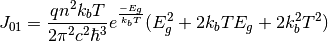

Analytic solar cells calculator¶
This package include the tools to calculate, using an analytical approach, the quantum efficiency or the IV characteristics of a solar cell (single junction or multi-junction). The tools that can be accessed directly when importing this package are:
- multijunctionIV
- spectral_response_all_junctions
Check below for other tools that might be available when importing the modules within this package.
Quantum efficiency calculator¶
This module calculates the quantum efficiency of any number of junctions. It uses the diffusion coefficients, diffusion lengths and the depletion aproximation to find out the fraction of photon that can be collected as a function or energy.
Contrary to the Multi-junction current voltage calculator, calculating the QE requires a substantial amount of information related to the material properties for each of the junctions and each of the layers that form each junction. In the next example we show the structure definition for calculating the QE of a GaInP/InGaAs/Ge tripple junction solar cell. Each subcell is a PN junction - requiring therefore two materials, one for the P and the other for the N side - and also includes a window layer and an AR coating.
import numpy as np
import os
from solcore import siUnits, material, si, asUnit
from solcore.constants import h, c, vacuum_permittivity
from solcore.structure import Structure, Junction, Layer
from solcore.state import State
from solcore.interpolate import interp1d
# We need to build the solar cell layer by layer.
# All the materials will be stored in this list, from top to bottom.
all_materials = []
# We start from the AR coating. We only need this to define the reflexion of the cell.
# In this case, we load it from an an external file
def this_dir_file(f):
return os.path.join(os.path.split(__file__)[0], f)
refl_nm = np.loadtxt(this_dir_file("MgF-ZnS_AR.csv"), unpack=True, delimiter=",")
refl_J = np.array((h * c / siUnits(refl_nm[0], "nm")[::-1], refl_nm[1][::-1]))
# Next is the window layer, made of AlInP. We load the absorption coefficent of AlInP from an external file, too
AlInP = material("AlInP")
window_material = AlInP(Al=0.52)
window_alpha = np.loadtxt(this_dir_file("alinp.csv"), unpack=True, delimiter=",")
window_material.alphaE = interp1d(x=siUnits(window_alpha[0], "eV"), y=window_alpha[1], bounds_error=False, fill_value=0)
all_materials.append(window_material)
# TOP CELL - GaInP
# Now we build the top cell, which requires the n and p sides of GaInP.
# We also load the absorption coefficient from an external file. We also add some extra parameters needed for the
# calculation such as the minority carriers diffusion lengths
InGaP = material("GaInP")
top_cell_n_material = InGaP(In=0.49, Nd=siUnits(2e18, "cm-3"), role="n")
top_cell_p_material = InGaP(In=0.49, Na=siUnits(1e17, "cm-3"), role="p")
top_cell_alpha = np.loadtxt(this_dir_file("in048ga052p.csv"), unpack=True, delimiter=",")
top_cell_n_material.alphaE = interp1d(x=siUnits(top_cell_alpha[0], "eV"), y=top_cell_alpha[1], bounds_error=False,
fill_value=0)
top_cell_p_material.alphaE = top_cell_n_material.alphaE
top_cell_n_material.hole_minority_carrier_diffusion_length = si("200nm")
top_cell_p_material.electron_minority_carrier_diffusion_length = si("1um")
all_materials.append(top_cell_n_material)
all_materials.append(top_cell_p_material)
# MID CELL - InGaAs
# The same thing.
InGaAs = material("InGaAs")
mid_cell_n_material = InGaAs(In=0.01, Nd=siUnits(3e18, "cm-3"), role="n")
mid_cell_p_material = InGaAs(In=0.01, Na=siUnits(1e17, "cm-3"), role="p")
mid_cell_alpha = np.loadtxt(this_dir_file("in01gaas.csv"), unpack=True, delimiter=",")
mid_cell_n_material.alphaE = interp1d(x=siUnits(mid_cell_alpha[0], "eV"), y=mid_cell_alpha[1], bounds_error=False,
fill_value=0)
mid_cell_p_material.alphaE = mid_cell_n_material.alphaE
mid_cell_n_material.hole_minority_carrier_diffusion_length = si("500nm")
mid_cell_p_material.electron_minority_carrier_diffusion_length = si("5um")
all_materials.append(mid_cell_n_material)
all_materials.append(mid_cell_p_material)
# BOTTOM CELL - Ge
# Idem
Ge = material("Ge")
bot_cell_n_material = Ge(Nd=siUnits(2e18, "cm-3"), role="n")
bot_cell_p_material = Ge(Na=siUnits(1e17, "cm-3"), role="p")
Ge_alpha = np.loadtxt(this_dir_file("Ge-Palik.csv"), unpack=True, delimiter=",")
Ge.alphaE = interp1d(x=siUnits(Ge_alpha[0], 'eV'), y=Ge_alpha[1])
bot_cell_n_material.hole_minority_carrier_diffusion_length = si("800nm")
bot_cell_p_material.electron_minority_carrier_diffusion_length = si("50um")
all_materials.append(bot_cell_n_material)
all_materials.append(bot_cell_p_material)
# We add some other properties to the materials, assumed the same in all cases.
# If different, we should have added them above.
for mat in all_materials:
mat.hole_mobility = 3.4e-3
mat.electron_mobility = 5e-2
mat.dielectric_constant = 9 * vacuum_permittivity
# And, finally, we put everything together, adding also the surface recombination velocities.
triplejunction = Structure(
[
Layer(material=window_material, width=si("25nm")),
Junction(
(
Layer(si("100nm"), material=top_cell_n_material),
Layer(si("600nm"), material=top_cell_p_material),
),
sn=1,
sp=1,
),
Junction(
(
Layer(si("100nm"), material=mid_cell_n_material),
Layer(si("3.5um"), material=mid_cell_p_material),
),
sn=1,
sp=1,
),
Junction(
(
Layer(si("400nm"), material=bot_cell_n_material),
Layer(si("100um"), material=bot_cell_p_material),
),
sn=1,
sp=1,
),
]
)
# Now the 'solar_cell' object below contains all the information regarding the solar cell. So, we use it
solar_cell = State()
solar_cell.structure = triplejunction
solar_cell.reflectivity = refl_J
So far, it has been only the definition of the structure. To actually calculate the quantum efficiency we need to add the energy range in which we want to calculate the results and call the spectral_response_all_junctions function:
import solcore.analytic_solar_cells as ASC
# The energy in SI units
E = si(np.linspace(0.6, 3.4, 1000), "eV")
# We add this energy to the solar cell structure.
solar_cell.energies = E
# We run the simulation. Verbose=True ensures that we have a full report of the parameters printed on the screen
qe_result = ASC.spectral_response_all_junctions(solar_cell, verbose=True)
Below there is an image of the QE corresponding to the three junctions as a function of wavelength, which is a more common representation.

Since we didn’t define any solar spectrum or solar cell geometry, we can not have the short circuit current for each of the junctions. We add that information to the solar_cell object above and sun again the solver. We are assuming we have some concentration optics and metallisation on top of the solar cell:
from solcore.solar_spectrum import calculate_spectrum_spectral2
# Configure cell geometry and concentration
# Cell area is stated to be 7mm x 7mm
cell_area = 0.7 * 0.7 / 1e4 # expressed in m-2
# Geometrical concentration is 1000, but the optical efficiency is approximately 0.85 and cell metalisation shading 8%
concentration_factor = 1000 * 0.85 * (1 - 0.08)
# We create a solar spectrum using SPECTRAL2 and the default configuration
# - See documentation and example of that package for more info
spectrum = calculate_spectrum_spectral2()
# We use the spectrum is in SI units: Watts m-2 joule-1.
incident_x_J_y_per_J = spectrum["incident spectrum energy si"]
incident_function = interp1d(y=incident_x_J_y_per_J[1] * concentration_factor * cell_area, x=incident_x_J_y_per_J[0])
power_density = spectrum["incident power density"]
print('Power density = {:.2f} W m-2\n'.format(power_density))
# We already have the energies, as defined above
solar_cell.incident_light = (E, incident_function(E) / E )
qe_result = ASC.spectral_response_all_junctions(solar_cell, verbose=False)
print("Subcell photocurrent density [mA cm-2]:")
print('\tJsc(Top) = {:.2f}'.format(1e3 * qe_result["junctions"][0]["J"] / (cell_area * 1e4 * concentration_factor)))
print('\tJsc(Mid) = {:.2f}'.format(1e3 * qe_result["junctions"][1]["J"] / (cell_area * 1e4 * concentration_factor)))
print('\tJsc(Bot) = {:.2f}'.format(1e3 * qe_result["junctions"][2]["J"] / (cell_area * 1e4 * concentration_factor)))
After these modifications, the quantum efficiency has not changed, but we can have the short circuit current density of each of the subcells:
Power density = 891.90 W m-2
Subcell photocurrent density [mA cm-2]:
Jsc(Top) = 9.73
Jsc(Mid) = 12.02
Jsc(Bot) = 25.18
-
solcore.analytic_solar_cells.QE.spectral_response_all_junctions(state_object, V=0, verbose=False)[source]¶ Calculates the spectral response of any number of junctions using analytical diode equations as described in J. Nelson’s book “The Physics of Solar Cells” (2003). All parameters must be in SI units. It only works for homojunctions.
Parameters: - state_object –
State object containing all the information necessary to calculate the spectral response of the solar cells. It has to include:
- structure: A structure object with one or more Junction objects. Each junction is made of a sequence of Layers (with a thickness and a material - which MUST include a role= n, p or i) and the surface recombination velocities for electrons and holes. Window layers and back surface filed layers must be left outside the Junction definition.
- incident_light: (optional) 2D array containing the energies and the spectral power density.
- energies: (optional) Energies at which to calculate the spectral response. It is ignored if incident_light is provided.
- shading: (optional) Shading loses.
- reflectivity: (optional) 2D array containing the reflectivity of the solar cell as a function of the energy
- reflectivity_function: (optional) function that calculates the reflectivity as a function of energy.
- V – The voltage at which to perform the calculations (not implemented, yet)
- verbose – If the information about the calculation must be printed.
Returns: A dictionary containing, as a function of energy:
- junctions: A list containing the QE data for each junction
- transmitted: The transmitted power density
- transmitted_fraction: The fraction of transmitted power
- passive_loss: The passive losses (light absorbed in the encapsulants, AR coatings, window layers, etc)
- reflected: reflected power density
- reflected_fraction: Fraction of reflected power
- e: The energy values
- state_object –
-
solcore.analytic_solar_cells.QE.calculate_junction_sr(junc, energies, bs, bsInitial, V, printParameters=False)[source]¶ Calculates the total quantum efficiency, the QE splitted by regions, photocurrent and other parameters for a given junction at a given voltage.
Parameters: - junc – The junction object
- energies – The energies at which to perform the calculation
- bs – The spectral power density reaching the junction
- bsInitial – The initial power density
- V – The voltage at which to perform the calculations (not implemented, yet)
- printParameters – If a list of all parameters must be printed
Returns:
Multi-junction current voltage calculator¶
This module contanes all the functions necessary to calculate the IV curve of single and multi-junction solar cells using the2-diode equation as the starting point. In addition to the multijunctionIV function that can invoked directly when importing the solcore.analytic_solar_cells package, this module containes several tools to calculate the reverse saturation currents under the radiative aproximation, using a radiative efficiency or based on the knowledge of Voc and Jsc.
Here is an example on how to use this module to calculate the IV curve of a triple junction solar cell, using the results of the Example 3 above (see Quantum efficiency calculator) and ploting them with the solcore.graphing package:
import numpy as np
from solcore.structure import Structure, Junction
import solcore.analytic_solar_cells as ASC
from solcore.state import State
from solcore.graphing import *
# We import the QE results obtained in ASC_example_3 which contain the short circuit currents of each junction
# when the solar cell is illuminated with the default SPECTAL2 spectrum
from ASC_example_3 import qe_result, power_density, cell_area, concentration_factor
# Ref temperature ºC. Let's say we have the reverse saturation currents J01 and J02 of each junction at a
# reference temperature and we want the IV curve at a different one. We have to make a correction to the J01 and J02
cell_temp = 60
ref_temp = 25
Tcell = 273 + cell_temp
Tref = 273 + ref_temp
# The IV data will be stored in a State object. We create it, including the cell and reference temperatures.
IV_calculation_state = State(T=Tcell, Tref=Tref)
# From the QE object we get the short circuit currents
Isc_array = [qe_result["junctions"][0]["J"], qe_result["junctions"][1]["J"], qe_result["junctions"][2]["J"]]
# And we create a list with the reverse saturation currents. In this case, we don't calculate them but just assume we
# have them from somewhere.
I01_array = [4.93e-24, 1.0e-21, 4.93e-6]
I02_array = [3.28e-15, 2.7e-10, 1.0e-5]
# This is the structure to calculate.
IV_calculation_state.structure = Structure(
[
Junction(Eg=1.9, j01=I01_array[0], j02=I02_array[0], R_shunt=3e6,
R_series=0.0236, n1=1.00, n2=2.0, photocurrent=Isc_array[0]),
Junction(Eg=1.4, j01=I01_array[1], j02=I02_array[1], R_shunt=1.5e6,
R_series=0.0012, n1=1.00, n2=2.0, photocurrent=Isc_array[1]),
Junction(Eg=0.66, j01=I01_array[2], j02=I02_array[2], R_shunt=115,
R_series=8e-4, n1=1.00, n2=2.0, photocurrent=Isc_array[2]),
]
)
# We solve it, including explicitely the range of voltages we are interested
IV_result = ASC.multijunctionIV(IV_calculation_state, V=np.linspace(0, 4, 1000))
# We use the tools of the graphing package to get a nice plot of the IV curves.
junction_colors = ["blue", "green", "red"]
graph_lines = [GraphData(iv, label="Junction {}".format(i + 1), color=junction_colors[i])
for i, iv in enumerate(IV_result["junction IV"])]
graph_lines.append(GraphData(IV_result["IV"], linewidth=2, color="black", label="Multijunction"))
g = Graph(graph_lines, ylim=(0, 7), xlabel="Bias (V)", ylabel="Current (A)", legend="best").draw()
eta = IV_result["Pmpp"] / (power_density * cell_area * concentration_factor)
print('\nThe solar cell properties are: ')
print('\tIsc = {:.2f} mA cm-2'.format(1e3 * IV_result["Isc"] / (cell_area * 1e4 * concentration_factor) ))
print('\tVoc = {:.2f} V'.format(IV_result["Voc"]))
print('\tFF = {:.2f} % '.format(IV_result["FF"] * 100))
print('\tEta = {:.2f} %'.format(eta * 100))
The result of the above coe will be the figure below and the following output:
Power density = 891.90 W m-2
Subcell photocurrent density [mA cm-2]:
Jsc(Top) = 9.73
Jsc(Mid) = 12.02
Jsc(Bot) = 25.18
The solar cell properties are:
Isc = 9.73 mA cm-2
Voc = 3.34 V
FF = 89.20 %
Eta = 32.51 %

-
solcore.analytic_solar_cells.IV.multijunctionIV(state_object, V=None, photon_recycling=False, n1=1, n2=2, fraction_coupled=None, coupling_iterations=10)[source]¶ Calculates the overall IV characteristics of any number of junctions numerically at the requested voltage points. If photocurrent_np is not provided, the resultant IV characteristics are purely recombination currents, otherwise light IVs are returned.
If the state_object includes a reference temperature “Tref”, then the reverse saturation currents are assumed to be at that temperature and are therefore re-calculated at the target “T”. This is only valid for small temperature differences.
- Conventions followed:
- SI Units
- Photocurrents: Positive.
- Dark Currents: Negative
Parameters: - state_object –
State object containing
- T: overall temperature
- Tref: (optional, in case the j01 and j02 correspond to a different temperature that the target temperature)
- structure: Structure object containing one or more Junction objects, each with (at least) the following
parameters in SI units:
- j01
- j02
- n1
- n2
- R_series
- R_shunt
- photocurrent (optional, is assumed = 0 if not present)
- Eg (optional, bandgap, only used if Tref is given)
- material (optional, a solcore.material object, needed for radiative coupling calculations)
- qe (optional, the quantum efficiency of the junction, needed for radiative coupling calculations)
- e (optional, the energy of the qe, needed for radiative coupling calculations)
- photon_recycling – If photon recycling calculation must be included (NOT IMPLEMENTED YET)
- V – Voltages at which to have the resulting IV curve
- n1 – Default n1 ideality factor (=1) if not included in the Junction objects
- n2 – Default n2 ideality factor (=2) if not included in the Junction objects
- fraction_coupled – fraction of the emitted light coupled from one junction to the next
- coupling_iterations – the maximum number of iterations during the coupling calculation
Returns: state object, updated to include:
- “IV”: (V, I) Calculated IV characteristics
- “junction IV”: [(V junc 1, I junc 1), (V junc 2, I junc 2), ...]
- “Rseries IV”: (V, I) Calculated IV characteristics of the series resistance
- “V”: Device voltages
- “I”: Device currents (the same for all junctions).
- “Isc”, Voc”, “P” and “FF”: In case of calculation under illumination.
-
solcore.analytic_solar_cells.IV.calculate_J01(Eg_in_eV, T, n)[source]¶ Calculate the reverse saturation current J01, assumed radiative, considering an absorption equal to 1 above the bandgap. Light trapping is included by considering the refractive index of the material:

Parameters: - Eg_in_eV – Bandgap in eV
- T – Cell temperature
- n – Refractive index of the material
Returns: The reverse saturation current J01
-
solcore.analytic_solar_cells.IV.calculate_J02_from_Voc(J01, Jsc, Voc, T, R_shunt=1000000000000000.0)[source]¶ Calculates J02 based on the J01, Jsc and the Voc. It is just the result of solving the 2-diode equation for J02. Ideality factors n1 and n2 are assumed to be equal to 1 and 2, respectively.
Parameters: - J01 – Reverse saturation current J01, typically the radiative component
- Jsc – Short circuit current (=photocurrent)
- Voc – Open circuit voltage
- T – Temperature
- R_shunt – Shunt resistance (default = 1e15)
Returns: The reverse saturation current J02
-
solcore.analytic_solar_cells.IV.calculate_J02_from_rad_eff(J01, radiative_efficiency, V, T, R_shunt=1000000000000000.0)[source]¶ Calculates J02 based on J01 and a radiative efficiency at a given voltage and temperature. Ideality factors n1 and n2 are assumed to be equal to 1 and 2, respectively.
Parameters: - J01 – Reverse saturation current J01, typically the radiative component
- radiative_efficiency – Fraction of the dark current that is radiative
- V – Operating voltage
- T – Temperature
- R_shunt – Shunt resistance (default = 1e15)
Returns:
-
solcore.analytic_solar_cells.IV.update_j0(junctions, T, Tref)[source]¶ Updates the reverse saturation currents for the target temperature knowing their values at a reference temperature.
Parameters: - junctions – List of junctions
- T – Target temperature
- Tref – Working temperature
Returns: List of junctions with their saturation currents updated for the new temperatures